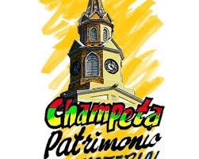

Cartagena es la cuna de los ritmos que definen su alma: la cumbia nació en sus costas, la champeta es su ritmo propio y urbano, el mapalé es su danza más frenética y el porro de sus tambores africanos suena desde el siglo XVII en sus calles y plazas.
Los Géneros de Cartagena
La Champeta
La champeta es el ritmo más propio y auténtico de Cartagena. Nació en los barrios populares afrocartageneros de Olaya, Uribe Uribe y Nelson Mandela en los años 80. Fusiona ritmos africanos (soukous, highlife), antillanos (son cubano, calipso) y costeños con letras en español que hablan de la vida cotidiana del pueblo cartagenero. Durante años fue estigmatizada por las élites, pero hoy es Patrimonio Musical de Cartagena y orgullo de su cultura popular.
La Cumbia
Nació en la costa caribe colombiana, con Cartagena como uno de sus centros históricos. Es la fusión perfecta del tambor africano, la flauta de millo indígena y la danza española. Las mujeres bailan con velas encendidas en las manos. Hoy se baila en todo el mundo.
El Mapalé
Danza de origen africano nacida en las riberas del río Magdalena cerca a Cartagena. Su ritmo frenético y acrobático lo hace único en Colombia. Antiguamente lo bailaban los pescadores en las noches para celebrar la pesca; hoy es protagonista de los Carnavales de Cartagena.
El Porro Cartagenero
Ritmo festivo y alegre interpretado con tambores, gaitas y flautas de millo. Propio de las fiestas patronales y las procesiones religiosas del Departamento de Bolívar. Las bandas pelayeras del sur de Bolívar tienen su base cultural en Cartagena.
La Gaita Cartagenera
La gaita es el instrumento más antiguo de Cartagena: flauta indígena zenú hecha de cactus y cera de abejas. La gaita hembra lleva la melodía y la macho el ritmo. El Festival de Gaitas de Ovejas, en Bolívar, es su celebración más importante.
El Fandango
Ritmo y danza colectiva propia de las sabanas de Bolívar y las fiestas populares de Cartagena. Se baila en rueda y celebra la cosecha, las fiestas patronales y la alegría de vivir en el Caribe colombiano.
La Champeta: El Ritmo del Pueblo Cartagenero

La champeta nació en los años 70 y 80 en los barrios populares del sur de Cartagena, especialmente en Olaya Herrera, Nelson Mandela y Uribe Uribe. Sus primeros exponentes fueron músicos afrocartageneros que mezclaban en sus picós (equipos de sonido gigantes) música africana, antillana y costeña.
Artistas pioneros como Anne Swing, Viviano Torres y "El Afinaito" le dieron forma al género. Durante décadas fue discriminada y llamada "música de negros" por sectores conservadores de Cartagena, pero el pueblo la siguió bailando en cada esquina, en cada picó, en cada fiesta de barrio.
Hoy la champeta es reconocida como Patrimonio Cultural Inmaterial de Cartagena y es el género musical que mejor identifica a su gente: alegre, libre, afro y caribeña.
Los Tambores: Corazón de la Música Cartagenera
Tambor pequeño que marca el compás base de la cumbia y el mapalé. Su ritmo constante es el corazón del conjunto.
Tambor grande que improvisa y conversa con el llamador. Es el "cantante" de los tambores en la música cartagenera.
Tambor de dos caras que se toca con baqueta y mano. Marca el tiempo grave y profundo de la cumbia afrocartagenera.
El Picó: La Tecnología Musical de Cartagena
El picó es una invención cartagenera: equipos de sonido gigantes, decorados con pinturas de personajes populares, que recorren los barrios de Cartagena montados en camiones o instalados en solares. Son el escenario donde nació y creció la champeta. Cada picó tiene su nombre propio —El Rumbero del Caribe, El Timbalero, La Bestia del Ritmo— y sus seguidores apasionados. El picó es cultura cartagenera pura.